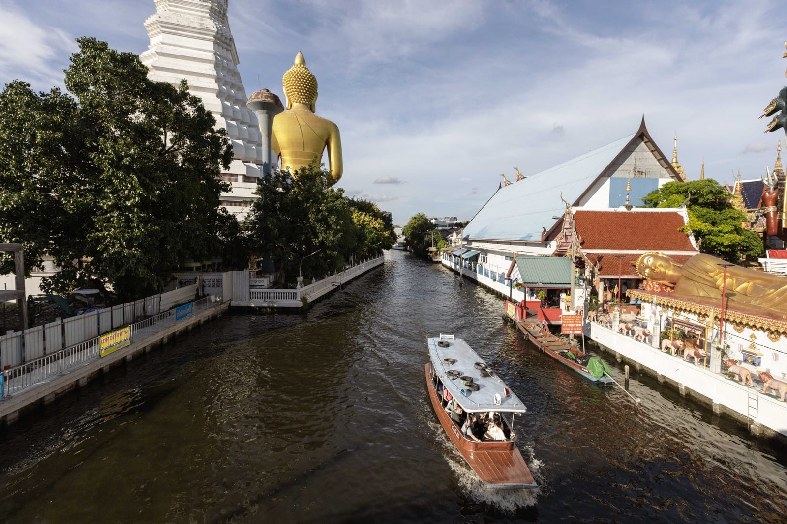
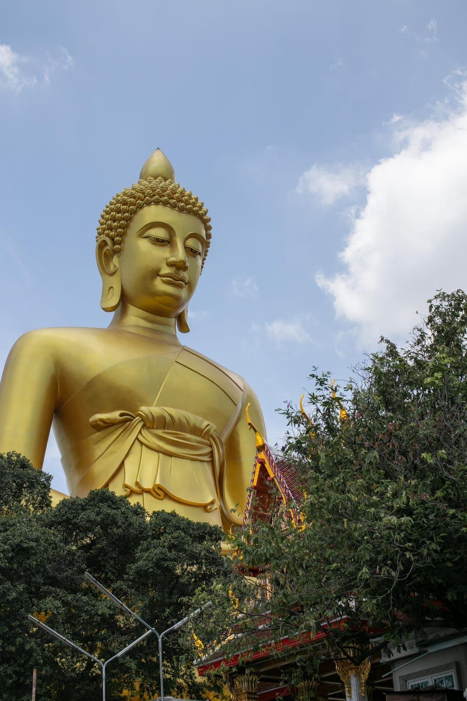
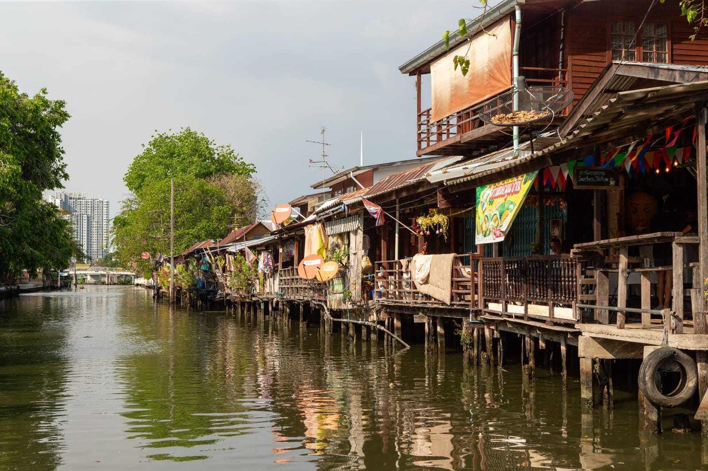

Experiences · Canal Boat Tour
Boat tour to the Giant Buddha & More

- Duration
- About 1 hour, longer with stops
- Price
- From 700 THB
(small boat; big boats from 1,200 THB) - Routes
- 6 options — see table below
A ride through the canals to the Giant Buddha
This is the same route the neighborhood has used for generations — a longtail boat leaving from Poomjai Garden's own canal, out onto the Thonburi waterways, to the Giant Buddha at Wat Paknam Phasi Charoen. It's our most popular tour, and the easiest way to see this side of Bangkok the way it's actually lived in.
The ride takes about an hour round trip. Along the way you'll pass canal-side homes, small temples, and the everyday rhythm of a neighborhood that still moves by water. At Wat Paknam, the Giant Buddha rises over the canal — one of the largest seated Buddha images in Bangkok — framed by its white chedi.
If the Giant Buddha route isn't quite what you're after, we also run boats to Artist House, Wat Arun, IconSiam, and Sathorn Pier — full pricing for every route below.
| Route | Price (first 5 pax) |
|---|---|
| Giant Buddha (Wat Paknam), no stop Small boat, fits 4–5 pax | 700 THB |
| Giant Buddha (Wat Paknam), no stop Big boat, up to 5 pax | 1,200 THB |
| Giant Buddha (Wat Paknam), with 30-minute stop | 1,800 THB |
| Artist House 30-minute stop included | 2,400 THB |
| Wat Arun + Giant Buddha 30-minute stop at Wat Paknam | 2,200 THB |
| Wat Arun | 1,600 THB |
| IconSiam or Sathorn Pier | 1,900 THB |
Remark
- All prices are per boat, for up to 5 people, except the small boat (4–5 pax only, no additional passengers).
- On big boats, additional passengers are 100 THB per person, up to a maximum of 10 people per boat.
- The standard trip to Wat Paknam is booked and paid through Ticketmelon; other routes and additional passengers are paid on the day, in cash.


